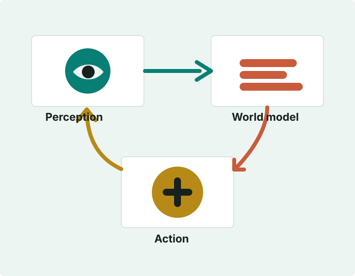

Academic Portfolio | Research Homepage
About
I work on practical AI systems that connect perception, reasoning, and action. My recent interests include world models, vision-language interfaces, and tools that make research workflows more reliable.

Research vectors
Research Focus
Learning Dynamics
Models that understand how scenes evolve over time, support prediction, and help agents plan with uncertainty.
Vision for Interaction
Perception systems that translate visual observations into actionable feedback for robotics, AR, and creative tools.
Reliable Tooling
Small, inspectable systems for diagnostics, evaluation, data capture, and repeatable research workflows.
Recent output
Recent Work
Realtime Pose Toolkit
A compact workflow for capturing, streaming, and inspecting pose data from mobile devices.
View on GitHubStream Health Monitor
A dashboard for measuring latency, packet gaps, jitter, and rolling throughput in real time.
View on GitHubTrajectory Evaluation Bench
Offline plots, alignment utilities, and metrics for comparing motion traces against reference logs.
View on GitHub